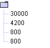
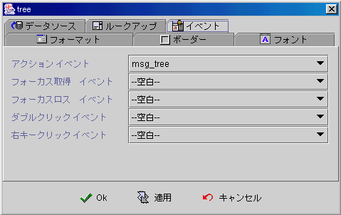

|

ツリーコンポーネント (Tree component)

共通プロパティ (common properties)
Dot
code 構造 (dot code structure)
データソース
(data source)
関連データソース
(lookup data source)
イベント
(event)
フォーミュラget/setプロパティ
(formula get/set properties)
ツリーコンポーネント
(Tree component)は関連データソース (lookup data source)でツリーの節を組み込み)，ツリー(binding)をデータソースフィールドに連結された後
，ツリーコンポーネントはデータソースフィールドで関連データソースフィールドに比較し，同じですと，この節を選択されたものとします。
Dot
code 節構造 (dot code structure)
ツリーコンポーネント
(Tree component)は根の節(root node)以外，どの節でも (node)
関連データソース (lookup data source) の一つのレコード (record)を表しています。その為、関連データソースの中(lookup data source)，レコード(record)
がツリー節のどこにあるのを表すフィールド (field)を設定しなければなりません。このフィールドはプロパティの中に
Dot code field と呼ばれます；同じレベル (level)中の節 (node)はプロパティ中に設定された順序 (Sequence
filed) でフィールド順位並べされます。
Dot
code フィールド は (dot)
節のレベル(node level)の分割記号で，例えば：asia.tw.taipei，taipei
はデータのCode， asia.tw は直前親の Code。以下は関連データソース
(lookup data source)のフィールド例：
| dotcode |
sequence |
icon |
description |
| asia |
1 |
|
アジア |
| asia.tw |
1 |
tw.gif |
台湾 |
| asia.tw.taipei |
1 |
taipei.gif |
台北 |
| asia.jp |
2 |
japan.gif |
日本 |
| asia.jp.tokyo |
1 |
|
東京 |
| asia.cn |
3 |
cn.gif |
中国 |
| asia.cn.shanghai |
1 |
|
上海 |
| america |
2 |
|
北米 |
| america.usa |
|
usa.gif |
米国 |
| america.usa.newyork |
|
|
ニューヨーク |
| america.canada.toronto |
|
|
トロント |
| europe |
3 |
|
ヨーロッパ |
| europe.italy |
1 |
italy.gif |
イタリア |
| europe.italy.milan |
1 |
|
ミランド |
| europe.france |
2 |
france.gif |
フランス |
| europe.france.paris |
1 |
|
パリ |
ツリーコンポーネントは以下のように設定：
-
Dot
code フィールド (dot code field)：dotcode。
-
フォーミュラ表示
(display formula)：{データソース:description}。
-
Iconデータフィールド：icon。
-
順位フィールド
(sequence field)：sequence。
以下の図はツリーコンポーネント
(Tree component) が実行された状態：
-
canada
節には対応データ (record data)がない為，Code が裸になり，実行するとユーザはこの節を選択が出来ません。
-
sequence
field はオプション (optional)プロパティで，フィールドに値 (record
field)を設定すると，ツリーコンポーネントはこれによって順序を並べ，設定しない，付録方式
(append)で順序を決定します。
-
アイコンフィールド (icon
field)はオプション (optional)のプロパティで，フィールドに値 (record
field)を設定すると，ツリーコンポーネントはアイコンを表示 (icon)し，設定しないと，Java™
デフォルトマークを表示します。
▲Top
データソース (data source)
-
データソース
(data source)：データソースの選択。
-
データフィールド
(data field)：データフィールドの選択。
-
Root：根
(root)の節に表示する文字。
-
Root Icon：根
(root) の節にアイコン。
-
Show Root：根の節
(root)の表示。

Root表示なし 。

-
Show Root handle：節(root)のHandleの表示。
Root Handle表示なし。

-
終点の節のみを選択可能：ユーザは終点節を選択しても無効でイベントを起動しない。
▲Top
関連データソース
(lookup data source)
-
関連データソース
(lookup data source)：データソースの選択。
-
関連データフィールド
(lookup data field)：データフィールドの選択。
-
Dot
code フィールド (dot code field)：データレコード (record)
はどのツリー節のフィールドに表示。
-
フォーミュラ表示
(display formula)：フォーミュラで節(node)を表示。
-
Iconデータフィールド：節
(node)の前にアイコン表示，オプション(option)プロパティ。
-
順序フィールド
(sequence field)：同じレベル (level) の節 (node)は順序フィールドで並べられます。
-
初期選択アイテム
(initial selection)：関連データソースが初期化される時に，選択がクリアーされます。
▲Top
イベント (event)
-
アクションイベント (action event)：使用が何かｱｸｼｮﾝしたとき、イベントを起動 (fire event)。
-
Gain Focus イベント：Focus 移入時、イベントを起動 。
-
Lost Focus イベント：Focus 移出時、イベントを起動 。
-
ダブルクリックイベント (double click event)：マウス左キーをダブルクリックすると，イベントを起動。
-
右キークリックイベント (right click event)：マウス右キーを押した時，イベントを起動。

▲Top
フォーミュラget/setプロパティ
(formula get/set properties)
SetProp("コンポーネント名",
"プロパティ", 値) ：プロパティ設定。
SetProp("コンポーネント",
"プロパティ", 値1,値2)：プロパティ設定。
GetProp("コンポーネント",
"プロパティ")：プロパティ読取。
| Set
Properties |
プロパティ
(Properties) |
値1
(Value 1) |
値2
(Value 2) |
説明
(Descriptions) |
| enabled |
1 使用可能へ，0 無効 |
|
有効か無効。 |
| setfocus |
1 Focusの設定 |
|
Focus設定。 |
| visible |
1 表示，0 隠し |
|
表示か隠し。 |
| repaint |
1 再描き，2 即時に再描き |
|
再度描き。 |
| revalidate |
1 リビルド |
|
再度データベースに連結し、リフラシューデータ。 |
| reload |
1 リロード |
|
以下の節をリロード。 |
| leafonly |
1
最後の節のみ選択可能，0 最後のに限らない |
|
ユーザは最後の節選択のみ可能。 |
| selected |
RecordNo フィールドNO RecordNoの節 |
|
|
Copyright © 2001~
2004 Probe Technology . All Rights Reserved.
Questions, comments,
and suggestions to Service@probe.com.tw
|